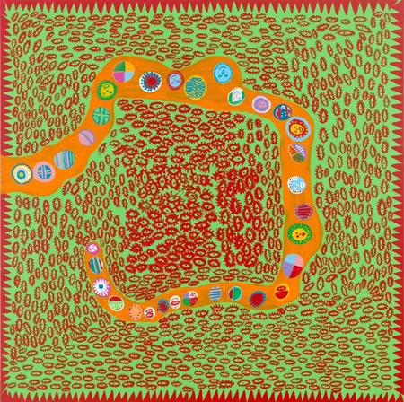
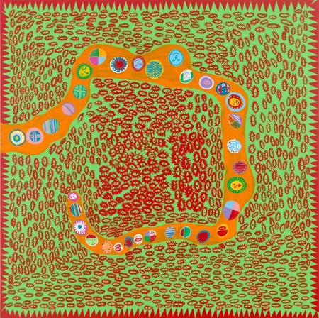

.jpg)
.jpg) 

Wie is Yayoi Kusama
Yayoi Kusama is een Japanse kunstenaar, geboren op 22 maart 1929, bekend om haar iconische stippenmotieven, herhalende patronen en felle kleuren. Haar werk onderzoekt thema's als oneindigheid, zelfverlies en psychische gezondheid. Kusama’s installaties, zoals de beroemde Infinity Rooms, en sculpturen, zoals haar pompoenen, zijn wereldwijd te zien. Ze wordt beschouwd als een pionier in de abstracte kunst, minimalisme en popart, en heeft een blijvende invloed op de hedendaagse kunstwereld.
Haar Invloeden
Yayoi Kusama werd beïnvloed door stromingen zoals surrealisme, abstract expressionisme en popart. Haar ontmoetingen met avant-garde kunstenaars in New York in de jaren '60, evenals haar persoonlijke ervaringen, inspireerden de kenmerkende stippenmotieven en herhalende patronen in haar werk.
Yayoi Kunstwerken
Yayoi Kusama’s kunstwerken kenmerken zich door felle kleuren, stippen en herhalende patronen die vaak een gevoel van oneindigheid creëren. Haar beroemde Infinity Rooms gebruiken spiegels en licht om de illusie van eindeloze ruimte te geven. Ook haar pompoensculpturen en geometrische schilderijen met stippen zijn iconisch. Kusama’s werk verkent thema’s als zelfverlies en psychische gezondheid, en combineert abstractie met surrealistische elementen, wat haar tot een van de meest invloedrijke kunstenaars van haar tijd maakt.
Haar Erfgoed
Yayoi Kusama heeft een blijvende invloed op de hedendaagse kunstwereld. Haar baanbrekende werk, van de iconische Infinity Rooms tot haar pompoensculpturen, heeft kunstenaars van verschillende generaties geïnspireerd. Kusama wordt erkend als een pionier in abstractie, minimalisme en popart, en haar werk blijft wereldwijd geëerd en tentoongesteld.